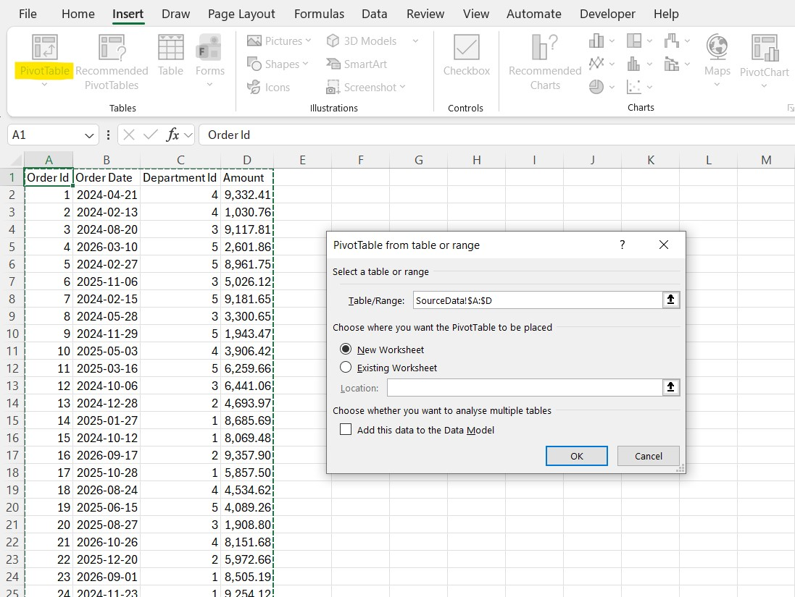
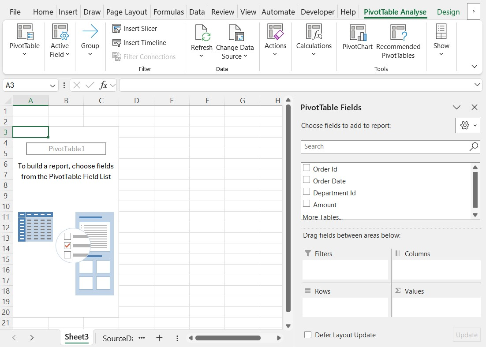
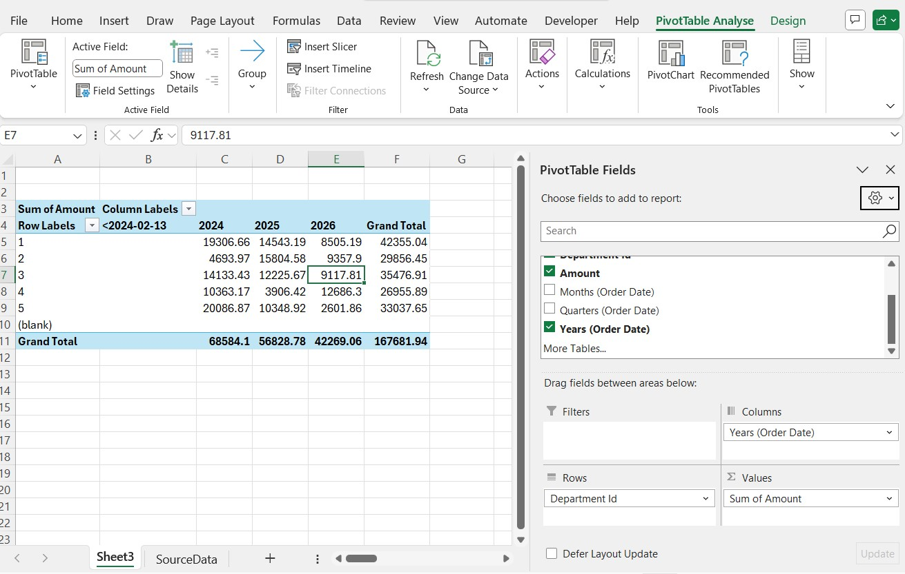

Сводные таблицы в Excel: практическое введение
Как построить первую сводную таблицу, свести данные по категориям и датам, переключаться между суммой и количеством и обновлять результат.
Сводная таблица сворачивает длинный список без единой формулы: итоги по категориям, количество, средние значения, по месяцам или годам. Её стоит освоить, потому что та же задача через СУММЕСЛИМН потребует формулу в каждой ячейке. Здесь только основы; тема большая, и дальше поможет документация Microsoft.
Подготовьте исходные данные
Сводной таблице нужен плоский список: одна строка заголовков, одна запись в строке, без пустых строк и столбцов, без объединённых ячеек и промежуточных итогов внутри. В примере четыре столбца: Order Id, Order Date, Department Id и Amount. Если данные неаккуратные, сначала см. очистку данных. Даты и суммы должны быть настоящими датами и числами, а не текстом (преобразование чисел-как-текст).
Полезно сначала превратить список в таблицу (Ctrl+T). Сводная таблица на основе таблицы подхватывает новые строки при обновлении и не включает пустые.
Создайте сводную таблицу
Выделите любую ячейку данных и выберите Вставка → Сводная таблица. Проверьте предложенный диапазон и выберите, куда поместить результат; безопасный вариант – новый лист.

В примере диапазон задан целыми столбцами (SourceData!$A:$D). Это работает, но в сводной таблице появится элемент (пусто) для пустых ячеек ниже данных. Таблица или точный диапазон вроде $A$1:$D$25 этого избегают.
Постройте отчёт
Пустая сводная таблица показывает панель Поля сводной таблицы. Четыре области под списком полей определяют, что куда попадёт:
- Строки – значения, которые станут подписями строк.
- Столбцы – значения, которые станут заголовками столбцов.
- Значения – что вычислять (сумма, количество, среднее).
- Фильтры – раскрывающийся список над таблицей, ограничивающий весь отчёт.

Перетащите Department Id в Строки, а Amount в Значения. Это первый пример: общая сумма по подразделениям. Для чисел Excel выбирает Сумму.
Количество вместо суммы
Чтобы посчитать заказы по подразделениям, щёлкните поле в области Значения, выберите Параметры полей значений и укажите Количество. Количество работает для любого столбца, а для текстовых оно используется по умолчанию. В том же диалоге есть среднее, максимум, минимум и вкладка Дополнительные вычисления с долями от итога.
Группировка дат по годам и месяцам
Перетащите Order Date в Столбцы. В современных версиях Excel даты группируются автоматически (появляются поля «Годы», «Кварталы», «Месяцы»). Если этого не произошло, щёлкните дату правой кнопкой и выберите Группировать. В отчёте подразделения в строках, годы в столбцах, а между ними сумма:

Группировка работает только если все значения в столбце являются настоящими датами. Достаточно одного текстового значения или пустой ячейки, и Excel её не предложит.
Обновление
Сводная таблица – это снимок данных, она не пересчитывается при изменении источника. Щёлкните её правой кнопкой и выберите Обновить или нажмите Alt+F5. Данные → Обновить всё (Ctrl+Alt+F5) обновляет все сводные таблицы книги.
Ограничения
- Значения в области сводной таблицы нельзя перезаписать: числа берутся из источника.
- Новые строки попадают в отчёт, только если находятся внутри диапазона источника, поэтому и стоит использовать таблицу.
- Формат столбца (например, разделитель разрядов) может сброситься при обновлении. Задайте его через Параметры полей значений → Числовой формат.
- Значения из сводной таблицы в формулах читаются функцией
ПОЛУЧИТЬ.ДАННЫЕ.СВОДНОЙ.ТАБЛИЦЫ. Excel вставляет её сам, когда вы щёлкаете ячейку сводной таблицы при вводе формулы; обычная ссылка на адрес ломается при изменении макета.
По теме: ВПР, чтобы подставить названия вместо идентификаторов.